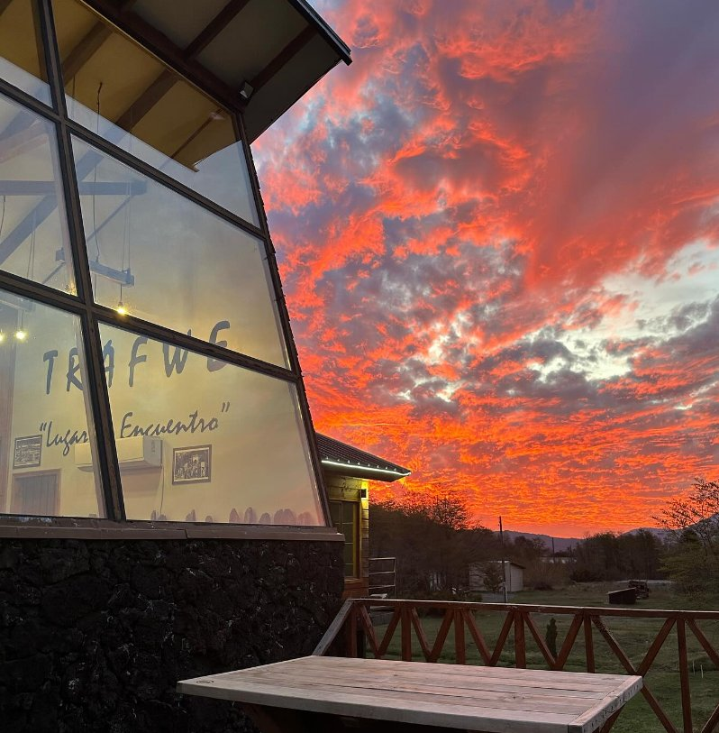

Un lugar de encuentro en la montaña
Nacimos en el corazón de la Cordillera de los Andes, en Malalcahuello, donde la araucaria, el volcán y la nieve son parte del paisaje cotidiano. Somos un espacio donde la naturaleza, el fuego y una gastronomía honesta se reúnen para crear momentos que perduran.
Cada plato, cada trago y cada rincón de Trafwe está pensado para que sientas la calidez del sur de Chile, lejos del ruido, cerca de lo esencial.
Trafwe es un restaurante familiar ubicado en Malalcahuello, pequeño pueblo al pie del volcán Lonquimay, en la región de la Araucanía. Aquí la madera, la piedra y el fuego son los materiales con los que construimos nuestra hospitalidad.
Nuestra cocina celebra los productos locales: trucha de río, quesos artesanales, hierbas de la cordillera. Todo elaborado con técnica y afecto, sin artificios, con la honestidad del sur.
Platos pensados para el clima de la cordillera: contundentes, aromáticos y elaborados con ingredientes de la zona.


"Un buen trago al calor de la cordillera."
Carta de vinos, cócteles artesanales
y bebestibles seleccionados.
Dos opciones de hospedaje para que prolongues la experiencia Trafwe. Madera, silencio, nieve y estrellas.
 Verano
Verano
 Invierno
Invierno
Calidez de madera y amplias ventanas con vista a la cordillera. Perfecta para grupos y familias que buscan reconectarse con la naturaleza.
 Otoño
Otoño
 Invierno
Invierno
Diseño contemporáneo, minimalista y cálido. Ideal para parejas que quieran vivir una experiencia íntima rodeados de bosque y nieve.
A solo 90 km de Temuco por la Ruta 181, en el corazón de la Cordillera de los Andes. El camino ya es parte de la experiencia.
Trafwe te espera con la mesa puesta, la chimenea encendida y la montaña como horizonte.